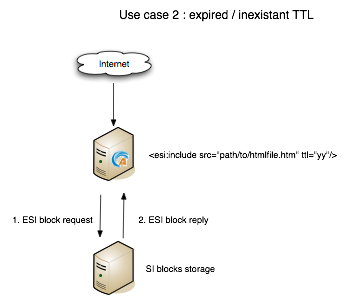
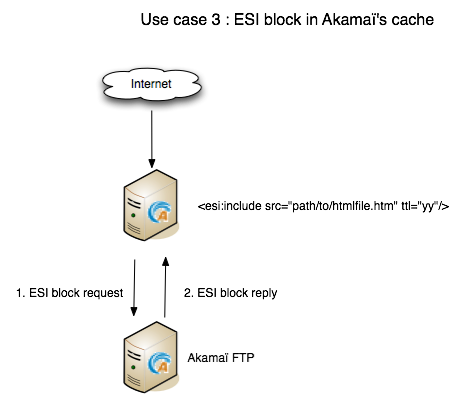
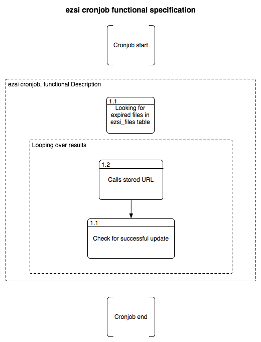

Documentation for the eZSI extension
Introduction
eZ Publish needed an extension that could be able to generate ESI or SSI tags in order to cache the HTML page as much as possible. This is what the eZSI extension has been designed for.
What is eZSI ?
eZSI makes it possible to generate either ESI or SSI tags in the HTML page generated by eZ Publish.
How does this extension work ?
I hope the images below will be cleared enough to describe how this extension work :

Use case 2
Use case 3


Cronjob workflow
Installation
Extracting the extension
Save the extension in your "extension" folder and extract it with your favorite extracting tool. You can also run the following command
tar zxvf ezsi.tar.gz
this will create a folder called "ezsi" under the "extension" folder
Creating the new table
You have to create the new table needed by ezsi. You can use the following command
mysql -u <user> -p<password> <ezpublishdatabase> < path/to/ezpublish/extension/ezsi/sql/mysql/schema.sql
This table must be stored in the same database as eZ Publish.
Declaring the extension
In order to have the extension working you have add the following line
ActiveExtensions[]=ezsi
in
settings/override/site.ini.append.php
And update the autoload array
php bin/php/ezpgenerateautoloads.php -e
Setting up the cronjob
In order to update SI blocks, ezsi is shipped with a cronjob which calls all pages which contain SI blocks. It is up to you do decide which frequency to use to launch the cronjob. The recommandation here it to take all your ttl and caculate the average. After that you will have enough informations to define a frequency. You can also add the following line into your ezpublish.cron file since all the global variables are already set:
0,15,30,45 * * * * cd $EZPUBLISHROOT && $PHP runcronjobs.php siblockupdate -q 2>&1
Remember that this is just an example. Here expired si-blocks will be updated every 15 minutes. It is up to you to decide which frequency to use.
Removing the extension
If you plan to remove this extension then following the process describe below is recommanded
Removing all {si-blocks} calls
You will have to remove all {si-block} calls in your templates. The following command will help you to find them
grep -nR "{si-block" extension/ design/
If you are using SVN then you can use the following command to avoid a lot of noise in the results of the above command
grep -nR "{si-block" extension/ design/ | grep -v svn
Removing the cronjob
You also have to remove the cronjob described above from your crontab. Run crontab -e and remove the according line.
Removing the table
You can now remove the ezsi_files table. To do this simply run the following SQL query
DROP TABLE ezsi_file
Deleting si-blocks
If the si-blocks have been stored on the local file system then they are stored in var/si-blocks/*. You can simple run the following command to remove them
rm -rf var/si-blocks/
If the SI blocks are stored in an external system, FTP for example then the you simply have to remove the 'si-blocks' folder.
Undeclaring the extension
Remove the following line
ActiveExtensions[]=ezsi
in
settings/override/site.ini.append.php
Deleting the extension
You can now remove the 'ezsi' folder which is located in the "extension" folder.
Configuring the extension
All the useful configuration directives are located in the following file
extension/ezsi/settings/ezsi.ini.append.php
TemplateFunctionSettings
Possible configuration
- ForceRegenerationString=<string>
- ForceRegenerationValue=<string>
It is possible to force the regeneration of a block by passing <ForceRegenerationString>=<ForceRegenerationValue> in the URL. http://www.site.com/path/to/page?<ForceRegenerationString>=<ForceRegenerationValue> will force eZ Publish to regenerate the SI blocks defined in this page.
For example with the following configuration
ForceRegenerationString=force_siblocks_update ForceRegenerationValue=yes
Will for the ezsi extension to update it SI blocks for any page called with the following URL http://wwww.site.com/url/alias?force_siblocks_update=yes
SIBlockSettings
Possible configuration:
- BlockHandler=ESI
- BlockHandler=SSI
- BlockFilePathPrependString=<string>
If you choose
BlockHandler=ESI
Then you should be able to use Akamaï or Varnish or whatever HTTP proxy which recognizes ESI markup. You will see the following markup in your templates
<esi:include src="si-blocks/xxxxxxx.htm" ttl="yy"/>
If you choose
BlockHandler=SSI
Then you should be able to use Apache's mod_include. Before using SSIs make sure your Apache server is ready to accept SSI calls. Please refer to the following documention before using them: http://httpd.apache.org/docs/2.0/mod/mod_include.html You will see the following markup in your templates
<!--#include virtual="si-blocks/xxxxxx.htm" -->
Defining a value to BlockFilePathPrependString is useful when SI blocks and HTTP are not on the same server. The extension will automatically generate the string 'si-blocks/<cachefilename>.htm' but this is not sufficient for remote file systems. We need informations on how to acess the file. This may be a hostname to access the file directly like http://siblocks.mysite.com/si-blocks/<cachefilename>.htm If you plan to use a local storage then this directive MUST be empty.
SIFilesSettings
two options are possible here:
- FS ( local File System )
- FTP
If you choose
FileHandler=FS
Then all SI blocks will be written on the local file system. All the files will be stored in var/si-blocks/*.
If you choose
FileHandler=FTP
Then all SI bocks will be stored on a remote FTP. Its configuration is described below. The blocks will be stored in si-blocks/*.
FTPSettings
These settings are only used for the FTP file handler. If you choose
FileHandler=FS
They will not be used. The configuration directives are:
- Host=<string>
- Port=<integer>
- Login=<string>
- Password=<string>
- Timeout=<integer>
- DestinationFolder=<string>
DevelopmentSettings
ActivateSIMarkup=enabled|disabled When set to disable the extension will not insert the SI tags in the HTML page. Thism makes it possible to plan the use of SI blocks without breaking the HTML of the page. Useful for development and debugging :)
Template function
{si-block} function
In order to have SI blocks generated in your HTML file you have to call a new template function : si-block. The syntax is the following:
{si-block key=string $key [tll=integer $ttl]}
your template code here
{/si-block}
The key attribute is mandatory and can be a scalar or an array. You can use a hash if you want but no key will be taken into account. You can not use objects as keys.
The ttl is optionnal. However is you plan to use ESI and Akamaï it is recommended to use it. You can choose between 4 units :
- h (hours)
- m (minutes)
- s (seconds)
- d (days)
Specify a floating point time is syntactically correct however the extension will convert it into an int at runtime. This means that for example setting ttl="9.5h" will not throw any syntax error but the real TTL will be 9h.
You can put any template code between {si-block} instructions. The template code inside these blocks will be interpreted and stored into a static HTML file.
Key generation
At a lower level the key for each block is composed by the following informations :
- value of the "key" attribute
- location of the {si-block} call in the template
- template name
- siteaccess name
- urlalias
- view parameters
This means that you do not have to think about unicity in your keys everything is already done in the template function. Although it is not recommended you can even use the same key in the same template but at different locations in this file. The final key will be different. This will make the template more difficult to maintain though.
Important notes
{si-block} VS {cache-block}
SI blocks are not a replacement for cache-blocks since there is neither subtree_expiry nor a a complex key system.
Personnalized pages
It is not possible to usr SI blocks for personnalized pages. If you do this all user will see the same page.
Setting up Apache for SSI
This extension is able to generate SSI markup however Apache must be configure as described below. In order to be able to use SSIs with eZ Publish, you need Apache 2.2.
Enabling mod_filter
Apache needs a specific module to be able to parse SSI markup on the fly once the HTML content is generated.This module is call mode_filter. The documentation is available at this URL http://httpd.apache.org/docs/2.2/mod/mod_filter.html This module is generally available with the default apache2 setup. The only this you have to do is to execute the following command
a2enmod filter
Enablig mod_include
This module makes it possible to parse SSI markup and is called by mod_filter. Documentation for this module is available at this URL : http://httpd.apache.org/docs/2.0/mod/mod_include.html This module is generally available with the default apache2 setup. The only thing you have to do is to execute the following command
a2enmod include
Adding mod_filter rules
In your site VirtualHost you can simply copy/paste the following configuration directive
FilterDeclare SSI FilterProvider SSI INCLUDES resp=Content-Type $text/html FilterChain SSI
Specific Rewrite Rule
In order to be able to find and execute SSI calls you must add the following RewriteRules in you site VirtualHost. This directive must be at the top of other directives
Rewriterule ^/var/si-blocks/.* - [L]
Do not forget to reload Apache configuration once you are done.
VirtualHost example
Here is a complete example of a working VirtualHost that contains all the needed mod_filter configuration directives.
<VirtualHost *>
ServerName site.com
DocumentRoot /var/www/site.com
<Directory /var/www/site.com>
# The +Includes options is needed to accept SSI markup parsing
Options Indexes FollowSymLinks +Includes
AllowOverride None
</Directory>
DirectoryIndex index.php
<IfModule mod_rewrite.c>
RewriteEngine On
Rewriterule ^/var/si-blocks/.* - [L]
Rewriterule ^/var/storage/.* - [L]
Rewriterule ^/var/[^/]+/storage/.* - [L]
RewriteRule ^/var/cache/texttoimage/.* - [L]
RewriteRule ^/var/[^/]+/cache/texttoimage/.* - [L]
Rewriterule ^/design/[^/]+/(stylesheets|images|javascript)/.* - [L]
Rewriterule ^/share/icons/.* - [L]
Rewriterule ^/extension/[^/]+/design/[^/]+/(stylesheets|images|javascripts?)/.* - [L]
Rewriterule ^/packages/styles/.+/(stylesheets|images|javascript)/[^/]+/.* - [L]
RewriteRule ^/packages/styles/.+/thumbnail/.* - [L]
RewriteRule ^/favicon\.ico - [L]
RewriteRule ^/robots\.txt - [L]
# Uncomment the following lines when using popup style debug.
# RewriteRule ^/var/cache/debug\.html.* - [L]
# RewriteRule ^/var/[^/]+/cache/debug\.html.* - [L]
RewriteRule .* /index.php
</IfModule>
FilterDeclare SSI
FilterProvider SSI INCLUDES resp=Content-Type $text/html
FilterChain SSI
</VirtualHost>